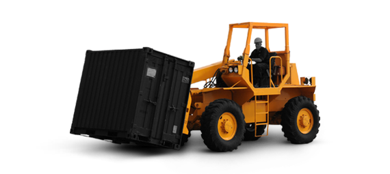

Freight Forwarding

Sectragon Limited moves more than 6000 TEU's of cargo for over 50 corporate clients worldwide. Our C&F services spell ease, flexibility and professionalism. A robust process and service model ensure continuous information exchange between our international and local associates. We guarantee the best standards in customer service with cost effectiveness and time bound deliveries. Our door-to-door services for all C&F assignments add to overall customer satisfaction. Our long term service contracts with many freight forwarding - shipping lines and freight forwarding international airlines ensure confirm shipments on pre-confirmed dates and at reduce cost.
Logistics and Transportation

The range of commodities carried by Sectragon Limited includes Tyre, Rubber Products, Automotive, Chemicals, Tea, Paper, Pharmaceutical, Communication Equipment, Yarn, Steel, Chrome Ore, Brown Goods, White Goods, Liquor, Lubricants, FMCG, and Power Plant Equipment. Transportation, like all industries is largely influenced by information and communication technologies with the focus being on knowledge of customer needs and value added services like End to End Logistics Solutions, Freight Forwarding, Specialized Transportation Solutions, Custom Clearance, Custom Regulation, Project Cargo Movement, ODC (Over Dimension Cargo) Movers, Supply Chain Management, Customized Logistics Solutions etc.
Supply Chain Management

Our team of consultants makes sure that every step is fastidiously coordinated and managed. With our wide unfold network, we tend to support your buying, merchandising & supply method anywhere around the world. We analyze every step in your logistical chain, secure each link and supply right issue, within the right place, at the proper time and at the proper value to confirm sleek and economical operation. Drawing on our world operations and native skilled data, our team will enhance routes to realize lower landed prices with inevitable lead times that helps scale back safety stocks, while up inventory turns.
Cargo Express

This is an innovative service and an effective logistics solution for the delivery of small cargo. This service is useful for companies of various scales – from individual traders to mass producers and importers. Sectragon Limited helps its Clients benefit from all the advantages of fast delivery anywhere. Our employees analyze Clients’ needs and cargo characteristics, formulate optimal routes, and calculate the price. We deliver the cargo strictly according to the agreed terms regardless of the geography of transportation. Close cooperation with reliable logistics companies and other Partners allow us to maintain a flexible and transparent pricing policy and excellent service quality levels.